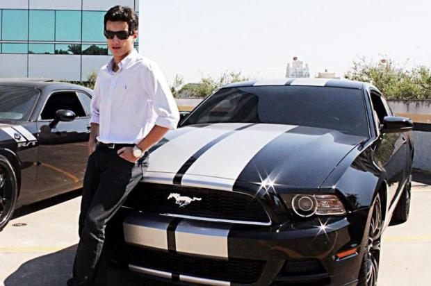

O Mercedes-Benz 560 SEC 6.0 AMG é um dos modelos que melhor resume a essência sobre quatro rodas da década de 1980. O estilo esportivo misturado com as linhas clássicas da Mercedes-Benz sintetiza a época dourada dos yuppies, do crescimento econômico rápido e sem limites e da mensagem “olhem para mim, venci”.
Este carro de linhas perfeitas e coração de trovão alia um estilo elegante a uma personalidade indomável. Atualmente, é o automóvel mais conhecido de Velozes e Furiosos, a saga cinematográfica da Universal Pictures que provou que a emoção não tem limites ao viver a ação e assumir riscos...
popularmente conhecido como Fusca (no Brasil) ou Carocha (em Portugal), foi o primeiro modelo de automóvel fabricado pela companhia alemã Volkswagen, sendo produzido entre 1938 e 2003.
Impala SS: O visual do Impala é apreciado até hoje o Impala ganhou a versão esportiva SS. Foi o primeiro modelo a receber essa designação, viva até hoje na linha da Chevrolet. um propulsor no modelo: o enorme 409 V8, que inicialmente entregava 360 cavalos, depois passando a 409.
kombi 1975: Ela se tornou um dos ícones da indústria automobilística mundial e ao lado do lendário Volkswagen Fusca, o Beetle, a Kombi Corujinha (apelido carinhoso recebido no Brasil), conquistou não só os consumidores daqui, mas marcou uma geração inteira culturalmente, assim como ajudou a criar fortunas e impulsionar o comércio em locais distantes.
Mp lafer 1975: A primeira fornada do esportivo da empresa Lafer, saiu em 1974 com o motor e câmbio do Fuscão 1500, ainda no mesmo ano já como modelo 1975, recebe o motor VW 1600,Ficou popular por aparecer em diversos filmes e novelas brasileiras.
maverick 1976 v8: Impossível não perceber que um Maverick está por perto. O som do seu potente V8 ecoa de longe e seu visual esportivo chama a atenção de todos ao redor. Apesar da pequena trajetória, o modelo é considerado até hoje um clássico por inúmeros fãs.
Quando eu tinha 14 anos em 1972 me apaixonei pelo Buggy Kadron. Um carro com design nacional, de baixa produção e por isso único. Tinha acabado de me aposentar na Califórnia e ansiava voltar ao Brasil. E iniciei minha busca por um desses veículos, que na verdade somente restam 160 unidades em todo o Brasil.
Desde a minha adolescência acompanho o Reliquias. Tive o prazer de vender o meu Fusca 1300 1974 com 72.000 km
